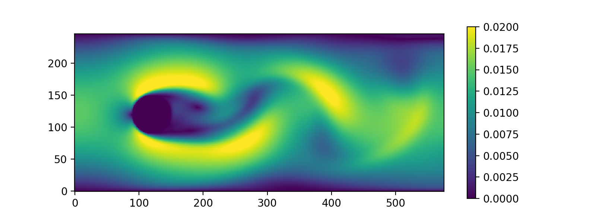
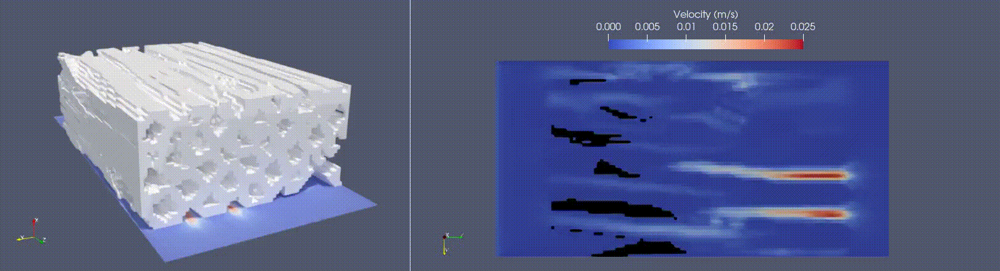

Validation and demonstration
MARBLES undergoes significant testing to ensure correct operation. MARBLES is routinely tested on different compilers and platforms through the GitHub Actions interaface. The regression tests are automatically run on these different platforms and checked for number of different types of errors, e.g., floating point exceptions, memory-bounds checks, and memory allocation/deallocation.
The regression test suite contains several different cases. We present a few here.
Flow around a sphere
This validation case is for the flow around a single sphere (Reynolds number of 100). The input file for this case is located in the Tests/test_files/single_cylinder. A 2D version of the same case is located in Tests/test_files/single_cylinder_2d. This case was run to steady state and resulted in a drag coefficient of 3.096, a lift coefficient of 0.8396, and a Strouhal number of 0.2986. These are within the acceptable range for reference values for this case. The velocity magnitude is shown here:
{kind=link}

Flow in a porous media
This demonstrates MARBLES ability to simulate flow through complex, porous media. An STL file, representing a section of a porous pine wood chip, obtained from an experimentally imaged 3D file,, defines the geometry for this case.
{kind=link}
